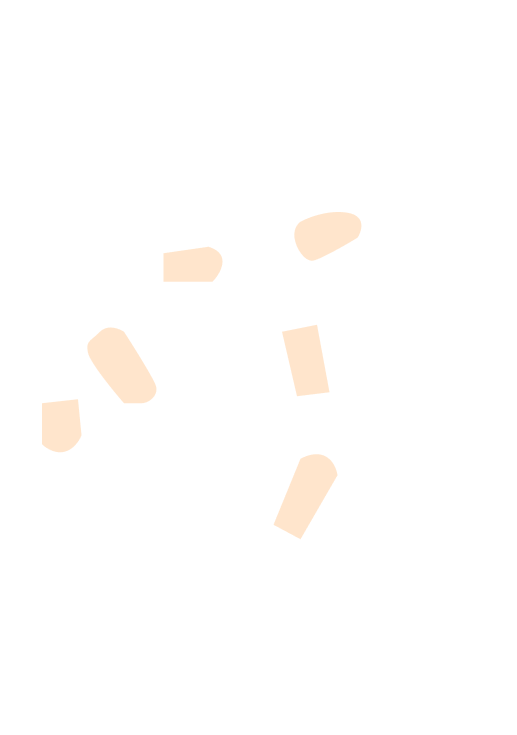
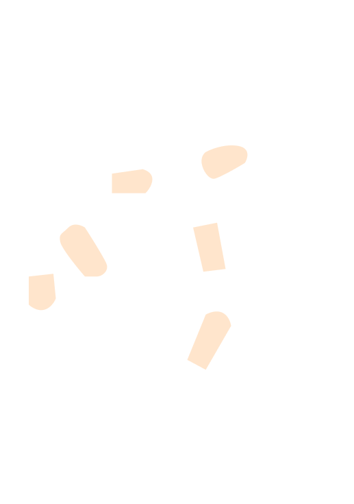

Data-probe 13
02 May 2024 (WS2)
London (UK)
Participant 13
Senior Lecturer in Design and Product Design program. She is a design researcher with a focus on the intersection of social design and technology. She is also the first supervisor of this PhD research.
Written description:
Not provided
Picture of the artefact:
 

Oral description:
“So I did have UTI but I chose not to show that just because one of the most painful experience of my life - having said that, I've never had a child before, so I'm sure that's more painful than what I'm describing now - was when I was given Mirena coil (IUS) because I had severe Polycystic ovary syndrome - PCOS [a very common hormone problem for women of childbearing age. Women with PCOS may not ovulate, have high levels of androgens, and have many small cysts on the ovaries. PCOS can cause missed or irregular menstrual periods, excess hair growth, acne, infertility, and weight gain]. So the GP is suggested as a way of controlling the [not recognizable] because maybe can very severe [not recognizable]. So the coil was one like one of the thing that she [not recognizable]. But when I did have it, I had the most excruciating pain for three weeks and that went on and off, probably like every hour or every two minutes. You can never tell when it comes and how it goes. When it comes the pain, lasts for about somewhere between 10 seconds to 20 seconds. So it's always that anxious as ** [other participant] was saying, you don't know when is going to come, but when it happens I can't do anything. I have to stop what I do, crawl into this little baby position and just hold for it to go back. And this is kind of affecting a lot including my work because I'm standing and ** and if I get these twenty seconds of unbearable pain, what do I do? So it's a constant anxiousness and fear as well. So I kind of bookended this with like slightly different to what you are doing. So this [the cube] for me represents normality. Because after 10 or 15 seconds, just feels the frustrating part is just goes away and it keeps as if nothing has ever happened and everything feels so normal. Like, why is this happening? So this this for me, it represents normality and a lot of kind of shapes and as others have said as well, I wanted to show the sharp edges around the [not recognizable] and represent the severity of the pain and little pegs... I wanted to do more about how [I was infect – not sure]... but it's kind of show that the sharp edges around [not recognisible]. Yes, that was sort of my mostly representation of what? Around the use of texture and patterns and aching, subabdominal cramps. It didn't feel like cramp. It wasn't cramp. It definitely felt more painful than that. I've had cramps in the past, but that wasn't cramps. Yeah. So I think it was definitely kind of more in representation of the pain, abdominal pain. But I'm trying to play around with the textures to show it.”